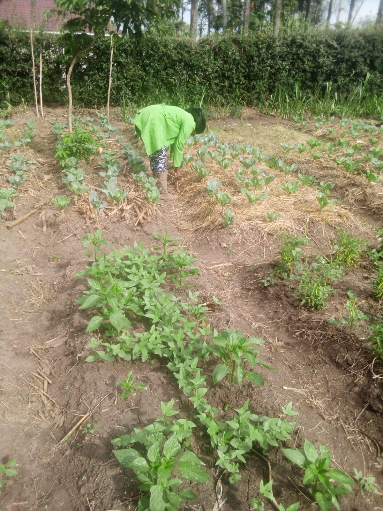
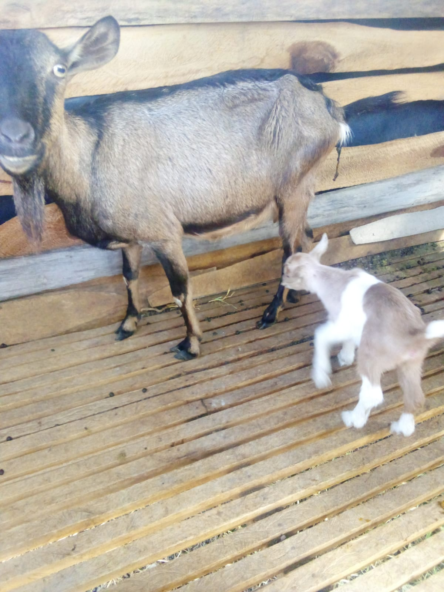
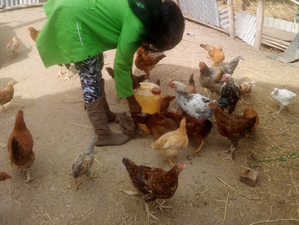
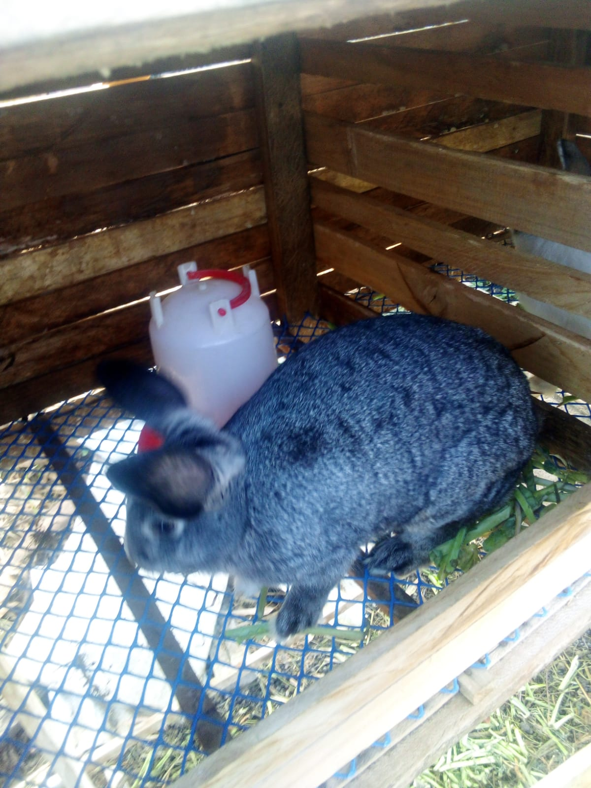
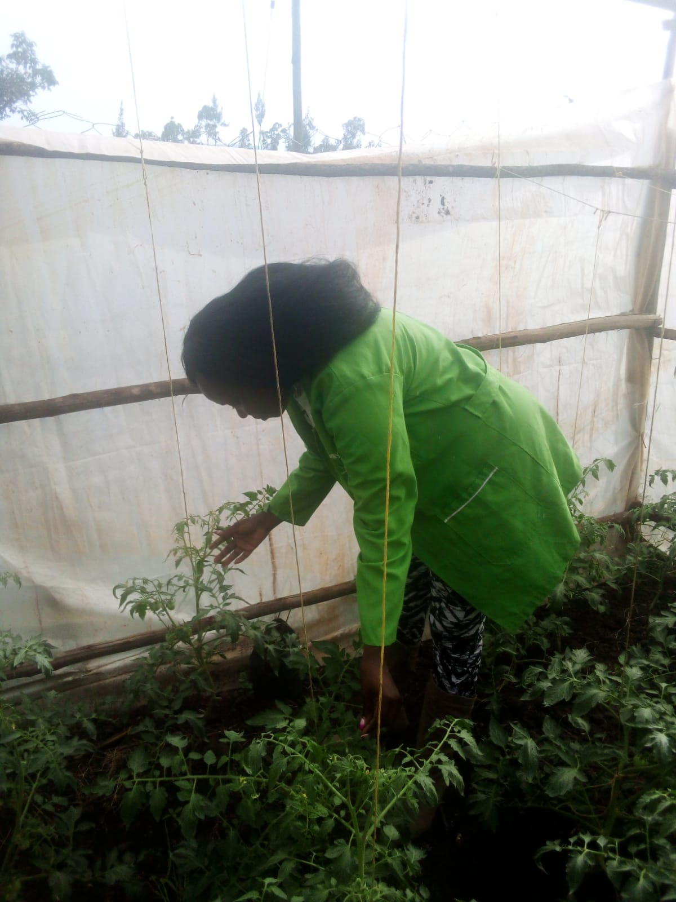
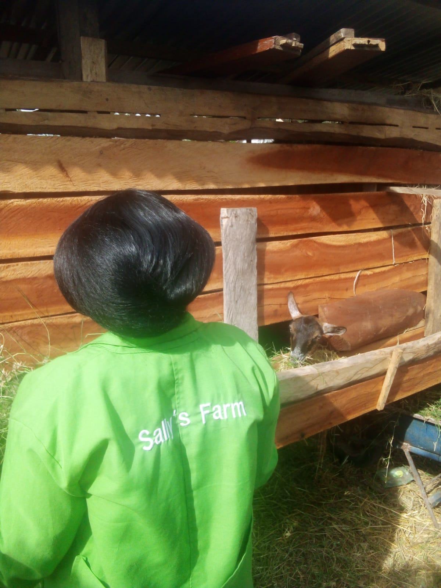
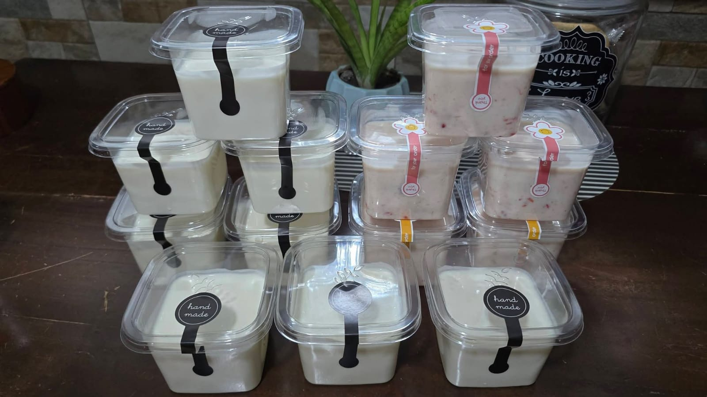

Healthy, Organic, and Sustainable Produce from Nyakach, Kisumu
Located in Pap-Onditi, we are dedicated to 100% organic farming. We use rabbit urine as natural fertilizer and focus on community nutrition through sustainable agriculture.


We rear healthy goats for fresh milk, creamy yoghurt, and natural milk soaps.

Farm-raised chickens and fresh organic eggs for the community.

Breeding for quality meat and high-potency organic liquid fertilizer.

Freshly harvested leafy vegetables grown with zero chemical pesticides.

Feeding our livestock with farm-grown fodder to ensure the highest quality nutrients.

Deliciously creamy, "Hand Made" with care. Available in plain and fruit flavors.
Location: Pap-Onditi, Nyakach, Kisumu County, Kenya
Email: awachsalyne6@gmail.com
Phone: +254 791 923 108